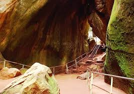
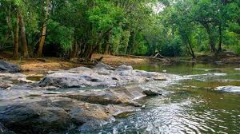

WAYANAD
Wayanad is a rural district in Kerala state, southwest India. In the east, the Wayanad Wildlife Sanctuary is a lush, forested region with areas of high altitude, home to animals including siatic elephants, tigers, leopards and egrets. In the Ambukuthi Hills to the south, Edakkal Caves contain ancient petroglyphs, some dating back to the Neolithic age.
POPULATION
8.17 lakhs (2011)
AREA
2,132km2
TOURIST SPOTS
EDAKKAL CAVES
Edakkal caves are well known for its pictorial depictions (cave art), which are thought to be of 6000 B C. To achieve the hollows, one needs to trek through the Ambukutty Mala. It will take around 45 minutes to climb the hill and you will never get baffled in your outing to these historical caves & it is one of the famous places to see in Wayanad.Inside the cave, you can see two chambers. The lower chamber is 18 ft long, 12 ft wide and 10 ft high and the upper chamber is 96 ft long, 22 ft wide and 18 ft high.
KURUVA ISLAND
A perfect blend of different natural colours makes Kuruva Island one of the best places to visit in Wayanad. It is a protected river delta with a number of islands over the middle of Kabini River, the famous east flowing river in Kerala.
BANASURA SAGAR DAM

One of the major tourist places to visit in Wayanad is Banasura Sagar Dam that impounds the famous Karamanathodu tributary of the east flowing river in Kerala that is Kabini River. The dam is encircled amidst a beautiful nature with a lot of options to do trekking and similar adventure activities.